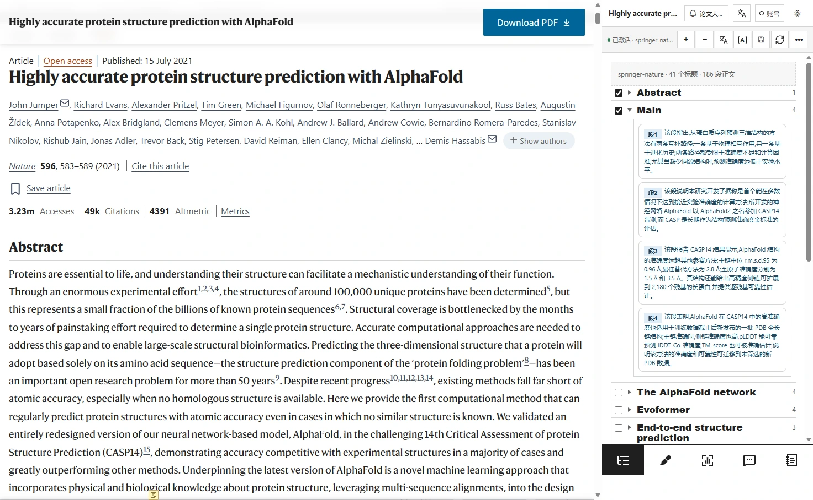

哪些功能需要 AI？
大纲导航、离线规则、手动高亮、笔记和工作台编辑无需 API Key。翻译、AI 高亮、解图、问答和笔记辅助填写需要自行配置模型连接。
Brevity · Evidence · Essence
AI 增强五个阅读模块，连接证据整理、假说梳理与实验规划。

双击导航，概述所选章节；单击段落标记返回原文。
在 Nature 原文页与 Edge 原生插件侧栏中操作。正文和侧栏通过浏览器分别采集、同步合成，等待过程已缩短。中文结果来自 DeepSeek Flash 实际调用，未手动填写 AI 回答。导航与高亮演示所选 Abstract、Main 章节，解图展示 Figure 1。本页播放录制结果，不在网页中实时调用模型。 问答实录使用已修正本机连接流式兼容问题的开发候选，当前公开包尚不包含此修正。笔记保留“证据核对未完成”提示。
把阅读所得带进自己的课题，追踪文献、梳理不同假说，再规划每张图背后的实验。
用节点表示研究对象，用连线表达主线、条件分支与反馈；在属性区记录判断和证据。支持拖动调整、撤销与重做。
同一课题可维护多个假说和组图方案，通过左侧目录切换。
记录目的、实验设计、拟支持的结论与进度，并切换画板、故事和内容规划。
本机保存，可导出完整课题、选中假说或组图方案，再导入到其他设备。
插件实际界面录屏，使用合成文献和内置演示课题；未执行实时 PubMed 检索或 AI 调用。画面中的总库条目为文献元数据，不代表已下载全文。
借助 AI 梳理每个 Panel 在研究什么、怎样设计实验、观察到了什么，以及能支持什么结论，再回到原图与原文核对、追问和修订。
按 Figure / Panel 建立目录，结合图注与正文定位实验，查看原图。
按实验目的、证据类型、模型、方法、分组、统计、观察和结论查看解读。
围绕对照设计、方法或替代解释继续提问；可逐项编辑解读字段、补充自己的笔记。
把不同图中的发现放回论文论证过程，整理证据块与待解决问题，为后续假说梳理提供依据。
AlphaFold 原论文 Figure 1 实录：使用原图与 DeepSeek Flash，实际生成 Panel A–E 解读。
大纲导航、离线规则、手动高亮、笔记和工作台编辑无需 API Key。翻译、AI 高亮、解图、问答和笔记辅助填写需要自行配置模型连接。
阅读档案和配置以本机存储为主。AI 请求会向你配置的服务商发送所需内容；共享仅在你主动发布时上传对应备注。API Key 在本机填写，加密配置备份由你选择开启。
查看隐私政策页面提取受出版社与 PDF 结构影响。部分 PDF 增强能力和本机 Codex 接入需要可选本机伴侣，公开包不附带其二进制。
公开备注与课题组评论仍在开发中。